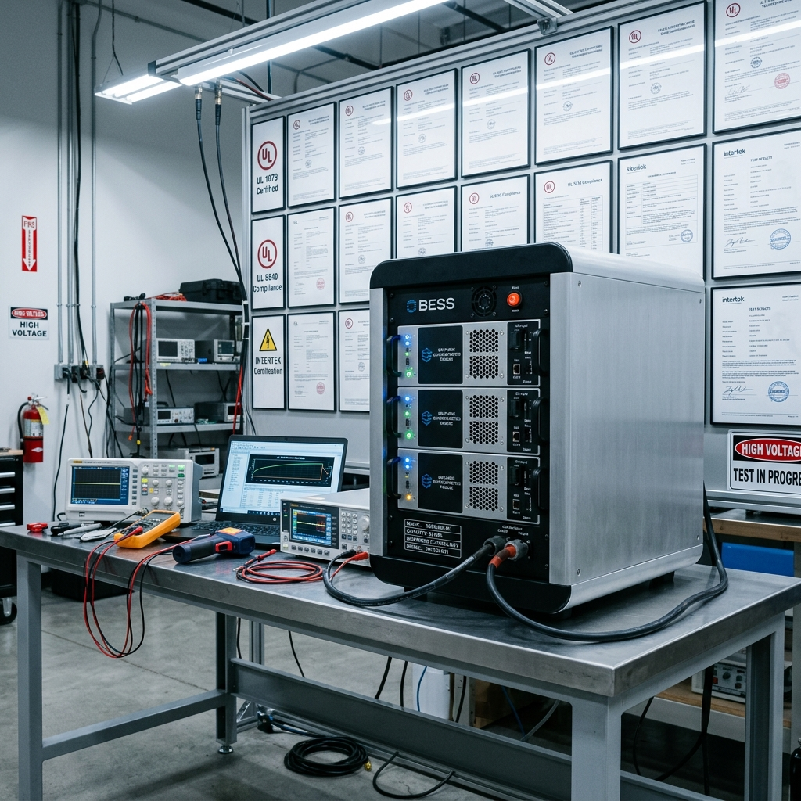

The Battery That Couldn’t Ship
Disclaimer: This is a fictional market scenario designed to illustrate the structural dynamics of certification and compliance coordination in a thin market. The characters and companies are invented; the specific company name “VoltaicEdge” is fictional. The certification requirements, institutional landscape, and coordination failures are grounded in practice.
Nadia Okafor is the CTO and co-founder of VoltaicEdge, a six-person energy storage company operating out of a converted warehouse unit in Scarborough, Ontario. VoltaicEdge builds Battery Energy Storage Systems — modular rack-mount and containerized units — based on graphene supercapacitor technology. Not lithium-ion. Not lead-acid. Supercapacitors.
The distinction matters. Conventional batteries store energy through chemical reactions deep inside electrode structures. Supercapacitors store energy electrostatically, on the surface of electrodes made from graphene — a single-atom-thick carbon lattice with an enormous surface area. The practical implications: VoltaicEdge’s units charge in under an hour instead of four, survive 20,000 charge cycles instead of 3,000, operate safely from -20°C to +55°C without risk of thermal runaway, and contain no cobalt, lithium, or other hazardous materials. The technology is real, the physics is published, and the performance advantages for specific applications — telecom backup, EV fast-charging buffers, harsh-environment microgrids — are genuine.
Nadia knows this because she spent eleven years designing fibre-optic networks for major Canadian telecoms before she started VoltaicEdge. She saw the battery rooms at hundreds of cell sites: lead-acid banks that lasted five years, caught fire occasionally, required hazardous waste disposal, and cost the carrier more in lifetime replacement cycles than the original installation. She built VoltaicEdge to replace them.
The technology works. The product prototypes work. The R&D partnership with a polytechnic Technology Access Centre has produced a validated Power Conversion System for EV fast-charging integration. A deployment partner in West Africa is ready to install containerized units at off-grid solar sites where lithium-ion’s temperature sensitivity makes it impractical.
VoltaicEdge cannot sell a single unit in Canada.
The Certification Wall
The reason is four characters long: UL 9540.
UL 9540 is the safety standard for Energy Storage Systems and Equipment. In North America, no utility, no telecom carrier, no EV charging network operator, and no building owner can legally install a battery energy storage system without UL 9540 certification — and its companion standard, UL 9540A, which governs thermal runaway fire propagation testing. These are not optional quality marks. They are regulatory prerequisites. Without them, the product does not exist commercially.
The certification process is punishing for a small company. Nadia has mapped it out:
| Requirement | What It Involves | Estimated Cost | Timeline |
|---|---|---|---|
| UL 9540 system certification | Full evaluation of the BESS — electrical, mechanical, environmental testing against the standard’s requirements | $80,000–$150,000 | 6–12 months |
| UL 9540A fire testing | Large-scale thermal runaway propagation testing in a certified fire lab | $60,000–$120,000 | 3–6 months |
| UL 1741 inverter/converter certification | The Power Conversion System must be independently certified for grid-connected operation | $40,000–$80,000 | 4–8 months |
| CSA C22.2 electrical safety | Canadian electrical safety certification for the complete assembly | $30,000–$50,000 | 3–6 months |
Total estimated cost: $210,000 to $400,000. Timeline: 12 to 18 months if everything goes right, which it rarely does. The testing requires access to accredited laboratories — Nationally Recognized Testing Laboratories (NRTLs) — that are booked months in advance. The documentation requires compliance engineers who understand UL’s submission format, test plan structure, and the specific technical questions the evaluators will ask. The process requires iterative engineering changes as test results surface design modifications needed to pass.
VoltaicEdge’s annual revenue from its fibre consulting business — the cash cow keeping the lights on — is approximately $600,000. The certification budget exceeds half a year’s income. Nadia cannot fund it from operations. She cannot raise venture capital without a clear path to certification. She cannot demonstrate a clear path to certification without the capital to begin the process.
This is the thin market chicken-and-egg at its most brutal. The product is real. The demand is real — every telecom carrier and EV charging operator in Canada needs better storage. The barrier is entirely institutional: a certification infrastructure designed for companies with seven-figure compliance budgets and full-time regulatory affairs departments, applied without accommodation to a six-person startup that built something better in a warehouse.
What Exists, Scattered
Here is the structural irony: every capability Nadia needs to get through certification exists somewhere in Ontario. It is scattered across institutions that do not know each other, do not coordinate, and have no mechanism to assemble into a coherent service.
Accredited testing. The Electrical Safety Authority’s testing facilities in Mississauga can perform portions of the UL 9540 electrical evaluation. Hydro One’s high-voltage lab in Kleinburg has the infrastructure for grid-connection testing. Polytechnic TACs — Mohawk College’s Energy and Power Innovation Centre in Hamilton, Conestoga’s SMART Centre in Cambridge — have equipment and expertise that overlaps with specific test requirements. Private NRTLs like QPS Evaluation Services in Mississauga perform UL evaluations commercially, but their queues are months long and their pricing assumes large-company clients.
Compliance engineering. A handful of independent consultants in the GTA specialize in UL submission packages for energy products. Two retired UL field engineers live in Ontario. A compliance manager at a mid-size inverter manufacturer in Cambridge has navigated UL 1741 certification three times and carries expertise that no textbook provides — the unwritten rules, the common failure modes, the evaluator expectations that determine whether a submission sails through or bounces.
Fire testing. UL 9540A fire propagation testing requires a large-scale fire lab with specific instrumentation. There are only a handful of facilities in North America that can perform it. But the test setup, instrumentation protocol, and specimen preparation can be coordinated in advance by someone who has done it before — reducing the actual lab time (and cost) dramatically.
Standards expertise. The Canadian Standards Association, which administers CSA C22.2, offers pre-submission consultations. NSERC-funded applied research at several Ontario polytechnics includes standards navigation as a component. The Ontario Centre for Innovation has programs specifically designed to help clean-tech startups reach market — but Nadia has never heard of them, and they have never heard of her.
Each of these capabilities exists. None of them is connected to any other. And Nadia — whose expertise is power electronics and graphene electrode chemistry, not compliance navigation — has no way to discover, evaluate, or assemble them into a coherent certification program.
The Ontario Clean Energy Certification Exchange
Now imagine that the Ontario Association of Colleges’ Applied Research Network — the body that coordinates NSERC Technology Access Centres across Ontario’s polytechnics — has deployed a certification services marketplace on Cosolvent infrastructure. The sponsor coalition includes the Ontario Centre for Innovation, the Electrical Safety Authority, and three polytechnic TACs with energy-sector specializations.
The marketplace is not a directory. It is not a bulletin board of available services. It is an active coordination layer that matches the specific, compound needs of companies seeking certification with the distributed capabilities of institutions, consultants, and labs that can provide the components of that certification — assembled fractionally, priced accessibly, and sequenced into a coherent program.
Nadia’s Listing
Nadia finds the platform through a TAC newsletter that her R&D partner at the SMART Centre forwarded. She opens it on her laptop after a long day of fibre network design reviews — the consulting work that keeps VoltaicEdge alive.
The platform asks her to describe what she needs. Not in compliance-speak. In founder-speak:
“We build graphene supercapacitor battery storage systems. Rack-mount and containerized. We need UL 9540, UL 9540A, UL 1741, and CSA C22.2 certification to sell in Canada. We have working prototypes and an R&D partnership with a TAC for the power conversion system. We have no compliance team and a limited budget. We need to understand what the actual path looks like and what it costs.”
The platform’s AI extracts the structured requirements:
- Product category: Battery Energy Storage System (BESS), stationary
- Technology: Graphene supercapacitor (non-lithium)
- Required certifications: UL 9540, UL 9540A, UL 1741 (PCS), CSA C22.2
- Current status: Prototype stage with validated PCS (TAC partnership)
- Company resources: No in-house compliance; limited budget; strong technical depth in power electronics
- Urgency: As fast as funding permits
The AI also flags something Nadia didn’t mention: because VoltaicEdge’s technology is electrostatic rather than electrochemical, the UL 9540A thermal runaway testing may be significantly simplified — supercapacitors have no exothermic chain reaction to propagate. This could reduce the scope (and cost) of the fire testing substantially. The platform’s CommonContext domain library surfaces a reference: UL 9540A Edition 4 includes provisions for testing technologies with inherently low thermal runaway risk. A pre-submission consultation with the NRTL can establish a reduced test protocol for non-lithium chemistries.
This is information that Nadia’s Google searches did not surface. It changes the economics.
The Fractional Certification Team
Within 48 hours of Nadia’s listing, the platform’s matching engine has identified a set of capability matches — not a single provider, but the components of a certification program:
Compliance navigation. Rajesh Subramaniam, a semi-retired UL field engineer who spent 22 years evaluating energy storage products, now consults fractionally from his home in Burlington. His profile on the platform lists UL 9540 and UL 1741 as primary competencies, with twelve completed evaluations cited. He offers 10-hour consultation blocks for pre-submission review — evaluating product design documentation against UL requirements, identifying likely test failures before they occur, and structuring the submission package in the format that accelerates evaluation. His rate: $200/hour.
Electrical safety testing. QPS Evaluation Services in Mississauga is a Nationally Recognized Testing Laboratory. Their normal queue for a UL 9540 evaluation is four months. But the platform’s scheduling layer reveals that QPS has testing slots available in eight weeks for projects that arrive with a pre-reviewed submission package — the queue penalty is largely a documentation-readiness penalty, not a capacity constraint. Rajesh’s pre-submission review is the key that unlocks faster scheduling.
PCS certification. VoltaicEdge’s Power Conversion System was developed in partnership with the SMART Centre. The SMART Centre’s profile on the platform includes their PCS test infrastructure and their familiarity with the specific VoltaicEdge design. A joint submission — with SMART Centre researchers providing the PCS test data and Rajesh structuring the UL 1741 package — reduces the PCS certification from a standalone project to a component of the system evaluation.
Fire testing scoping. Dr. Maria Santos, an associate professor of fire protection engineering at Seneca Polytechnic, has supervised three UL 9540A test campaigns for Ontario clean-tech companies through an NSERC-funded applied research program. She does not run the fire lab — the actual testing will be performed at an accredited facility — but she can scope the test protocol, prepare the specimen configuration, instrument the setup, and supervise the test execution. For a non-lithium technology like VoltaicEdge’s, her pre-assessment can determine whether a reduced test protocol applies — potentially cutting the fire testing cost by 60%.
Grant navigation. The Ontario Centre for Innovation’s profile includes a clean-tech commercialization program that funds exactly this kind of certification-readiness work — up to $50,000 for companies with validated prototypes and a clear path to market. The platform surfaces the program automatically, because VoltaicEdge’s profile matches the eligibility criteria. Nadia did not know this program existed.
The Assembly
The platform assembles a Certification Pathway — not a single service contract, but a sequenced program of engagements across five independent providers:
| Phase | Provider | Scope | Est. Cost | Timeline |
|---|---|---|---|---|
| 1. Pre-submission review | Rajesh Subramaniam | Design review, gap analysis, submission package prep (30 hrs) | $6,000 | 4 weeks |
| 2. Fire test scoping | Dr. Santos, Seneca Polytechnic | UL 9540A protocol determination, reduced-scope application | $4,500 | 2 weeks (concurrent with Phase 1) |
| 3. PCS test data | SMART Centre (existing R&D partner) | UL 1741 PCS test data package | $8,000 | 3 weeks |
| 4. UL 9540 system evaluation | QPS Evaluation Services | Full UL 9540 evaluation with pre-reviewed package | $95,000 | 10 weeks |
| 5. UL 9540A fire testing | Accredited fire lab (QPS-coordinated) | Reduced-protocol testing for non-lithium chemistry | $35,000 | 4 weeks |
| 6. CSA C22.2 | QPS (bundled with UL 9540) | Canadian electrical safety — bundled evaluation | $20,000 | Included in Phase 4 |
| Grant offset | Ontario Centre for Innovation | Clean-tech commercialization grant (if approved) | -$50,000 | Application concurrent |
Total estimated cost: $168,500 before grant; $118,500 after grant. Timeline: approximately 6 months from initiation to certification.
Compare this to Nadia’s original estimate: $210,000–$400,000 over 12–18 months. The platform did not make certification cheaper by magic. It made it cheaper through three specific mechanisms:
- Pre-submission preparation dramatically reduces NRTL evaluation time (and cost), because the evaluator receives a clean, well-structured package instead of a raw engineering dump.
- Technology-specific protocol scoping establishes a reduced UL 9540A test requirement for non-lithium chemistries — knowledge that exists in the standards community but is invisible to founders.
- Institutional bundling — the SMART Centre’s PCS data feeds directly into the system evaluation, eliminating a standalone UL 1741 certification effort.
What the Platform Knows
When the Ontario Association of Colleges configured the marketplace, they populated the CommonContext domain library with content curated by the participating institutions:
- UL 9540 submission guide: a step-by-step walkthrough of the evaluation process, written by a former UL evaluator, covering documentation requirements, common failure modes, and the specific technical questions evaluators focus on. This document does not exist publicly. It was assembled from the collective experience of Ontario’s compliance community for exactly this purpose.
- Non-lithium chemistry provisions: the specific UL 9540A Edition 4 clauses that permit reduced thermal runaway testing for technologies without exothermic propagation risk, including the application process for a pre-submission meeting to establish the reduced protocol.
- Ontario grant landscape: a continuously updated index of provincial and federal programs that fund certification, commercialization, and market-readiness activities for clean-tech companies — IRAP, Ontario Centre for Innovation, SDTC successor programs, NSERC CCI applied research streams.
- Accredited facility directory: testing labs, NRTLs, and calibration services in Ontario and eastern Canada, with real-time queue estimates and pricing ranges — the scheduling intelligence that turns a four-month queue into an eight-week booking.
What Changes
Six months later, VoltaicEdge receives its UL 9540 and CSA C22.2 certificates. The UL 9540A fire testing confirmed what the physics predicted: the graphene supercapacitor units exhibit no thermal runaway propagation. The test report becomes a marketing asset — documented proof of inherent safety that no lithium-ion BESS manufacturer can match.
Nadia closes her first Canadian sale within a month of certification: a 50 kWh rack-mount system for a telecom carrier’s cell site in Northern Ontario, replacing a lead-acid backup that failed during the previous winter. The carrier’s procurement team evaluated VoltaicEdge through the same platform that assembled the certification program — the company’s capability profile, now updated with certification status, was matched against the carrier’s published need for cold-climate backup power with non-hazardous chemistry.
Rajesh Subramaniam’s profile on the platform now includes VoltaicEdge as a completed engagement. His next client — a small Ontario company building a vehicle-to-grid bidirectional charger — finds him through the same matching engine. The compliance knowledge that was locked inside Rajesh’s head is now partially institutionalized in the platform’s memory: the pre-submission review template, the evaluator expectations, the documentation structure that accelerates evaluation.
Dr. Santos at Seneca Polytechnic uses the VoltaicEdge engagement as a case study in her fire protection engineering course. Her students learn UL 9540A by working on a real product for a real company — the applied research mandate that justifies her lab’s existence.
The SMART Centre’s R&D partnership with VoltaicEdge evolves from a research collaboration into a reference case. The next energy storage startup that approaches the Centre receives a warmer reception, because the Centre can now say: “We helped a company like you get through certification. Here’s how.”
What Makes This a Shadow Capacity Story
This is a story about shadow capacity — not idle machines, but idle expertise. Rajesh’s twenty-two years of UL evaluation knowledge. Dr. Santos’s fire testing methodology. The SMART Centre’s validated PCS data. The Ontario Centre for Innovation’s grant program. Every one of these capabilities existed, was funded, and was available. None of them was visible to Nadia, and none of them was connected to any other.
This is what shadow capacity looks like beyond the factory floor: productive capability that is present in the ecosystem but structurally inaccessible because no coordination mechanism connects it.
Institutional fragmentation — The capabilities Nadia needed existed across five independent organizations in four Ontario cities. No directory connected them. No coordinator assembled them. Each operated in isolation, unaware of the others’ relevance to the same client need.
Offering complexity — Certification is not a single service but a compound program: compliance engineering, fire testing, electrical evaluation, standards navigation, and grant funding, each provided by a different type of institution with different pricing, scheduling, and engagement models. No single provider offers the full stack.
Input translation — Nadia speaks power electronics; the certification world speaks UL test clauses and NRTL submission formats. The platform translated between these vocabularies, surfacing the UL 9540A reduced-protocol provision that Nadia’s own research had not uncovered.
Trust — The polytechnic association’s institutional backing provided credibility that no private marketplace could replicate. Rajesh trusted the platform because it was sponsored by the institutions he had worked with throughout his career. Nadia trusted it because her existing R&D partner vouched for it. The institutional trust was the precondition for every subsequent transaction.
Cold start — The certification services market for small Ontario clean-tech companies did not exist before the platform created it. Individual transactions happened sporadically, through personal networks. The platform made them systematic, discoverable, and repeatable.
This is part 3 of the series Recapturing Shadow Manufacturing Capacity in Ontario. For more on how AI-driven coordination infrastructure addresses thin market failures, see The Problem and the Intervention Matrix.